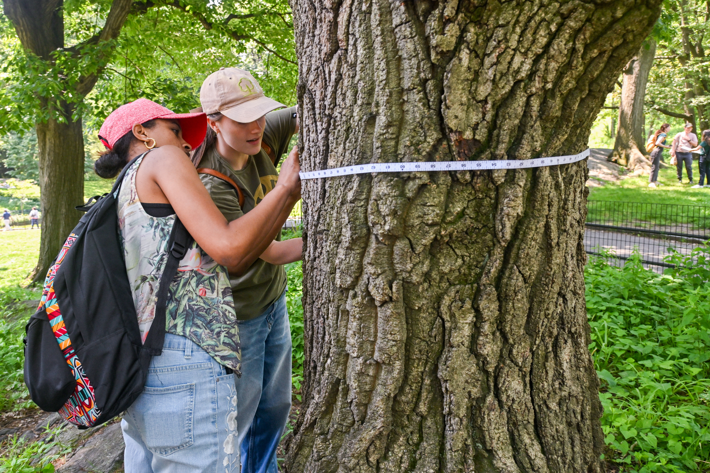

NYC is currently in the midst of a massive volunteer-led undertaking – A once every 10 year count of all the trees in the city!
The count is happening as New York City works to meet Law 148, which codified increasing tree canopy cover in the city to 30% in the next decade.
In the face of climate change, trees are critical to reduce pollutants, cool air and ground temperatures, and help soak up stormwater.
Site built by CUNY Newmark School of Journalism student Laura Pellicer. Data sources: Why Plant Trees? https://www.nyc.gov/html/mancb3/downloads/resources/NYC%20Street%20Tree%20Overview.pdf https://tree-map.nycgovparks.org https://www.urbanforestplan.nyc/#why-now